Last updated: 2022-02-21
Checks: 6 1
Knit directory: lpm/
This reproducible R Markdown analysis was created with workflowr (version 1.7.0). The Checks tab describes the reproducibility checks that were applied when the results were created. The Past versions tab lists the development history.
The R Markdown is untracked by Git. To know which version of the R Markdown file created these results, you’ll want to first commit it to the Git repo. If you’re still working on the analysis, you can ignore this warning. When you’re finished, you can run wflow_publish to commit the R Markdown file and build the HTML.
Great job! The global environment was empty. Objects defined in the global environment can affect the analysis in your R Markdown file in unknown ways. For reproduciblity it’s best to always run the code in an empty environment.
The command set.seed(20220204) was run prior to running the code in the R Markdown file. Setting a seed ensures that any results that rely on randomness, e.g. subsampling or permutations, are reproducible.
Great job! Recording the operating system, R version, and package versions is critical for reproducibility.
Nice! There were no cached chunks for this analysis, so you can be confident that you successfully produced the results during this run.
Great job! Using relative paths to the files within your workflowr project makes it easier to run your code on other machines.
Great! You are using Git for version control. Tracking code development and connecting the code version to the results is critical for reproducibility.
The results in this page were generated with repository version 4e55196. See the Past versions tab to see a history of the changes made to the R Markdown and HTML files.
Note that you need to be careful to ensure that all relevant files for the analysis have been committed to Git prior to generating the results (you can use wflow_publish or wflow_git_commit). workflowr only checks the R Markdown file, but you know if there are other scripts or data files that it depends on. Below is the status of the Git repository when the results were generated:
Ignored files:
Ignored: .Rhistory
Ignored: .Rproj.user/
Untracked files:
Untracked: analysis/us-inflation-simulation.Rmd
Untracked: analysis/us-treasury-flows.Rmd
Untracked: code/download_mspd.R
Untracked: code/download_public_debt.R
Untracked: code/fed_soma_holdings.R
Untracked: code/plot_cpi_charts.R
Untracked: data/mspd/
Untracked: output/mspd_processed/
Untracked: tmp.csv
Unstaged changes:
Modified: .Rprofile
Modified: code/README.md
Modified: data/README.md
Note that any generated files, e.g. HTML, png, CSS, etc., are not included in this status report because it is ok for generated content to have uncommitted changes.
There are no past versions. Publish this analysis with wflow_publish() to start tracking its development.
The chart below plots the z-score of the CPI energy index, WTI and Brent oil prices. Adjusting for volatility, it is clear that oil prices and the energy CPI index share a similar trend.
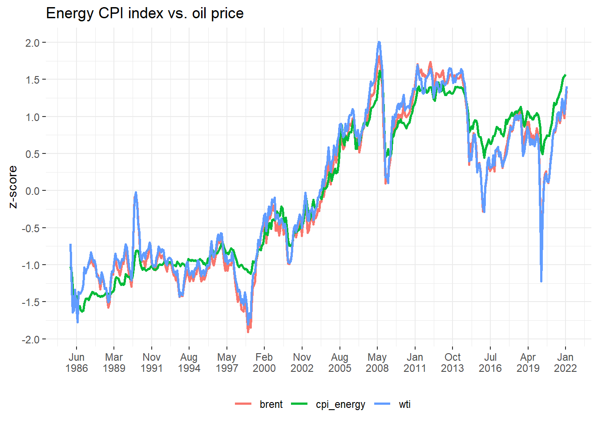
Despite the clear association between energy CPI and oil prices, a simple model fails to capture the dynamics.
Series: cpi_energy
Model: TSLM
Transformation: log(cpi_energy)
Residuals:
Min 1Q Median 3Q Max
-0.29389 -0.07213 -0.01458 0.06443 0.62998
Coefficients:
Estimate Std. Error t value Pr(>|t|)
(Intercept) 3.054946 0.029093 105.0 <2e-16 ***
log(wti) 0.543057 0.007963 68.2 <2e-16 ***
---
Signif. codes: 0 '***' 0.001 '**' 0.01 '*' 0.05 '.' 0.1 ' ' 1
Residual standard error: 0.1071 on 431 degrees of freedom
Multiple R-squared: 0.9152, Adjusted R-squared: 0.915
F-statistic: 4651 on 1 and 431 DF, p-value: < 2.22e-16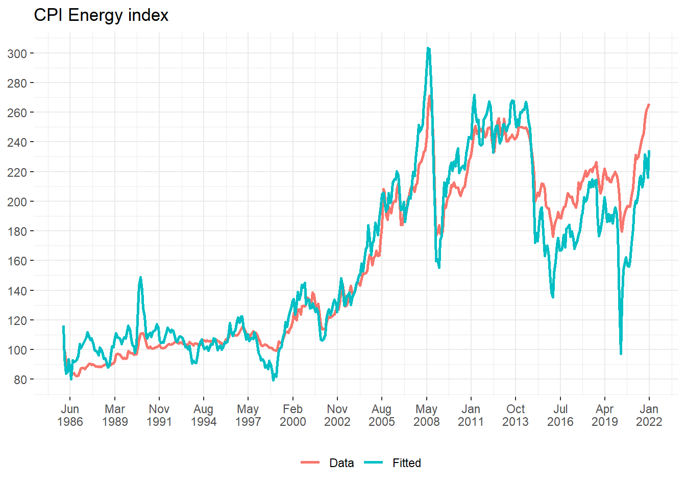
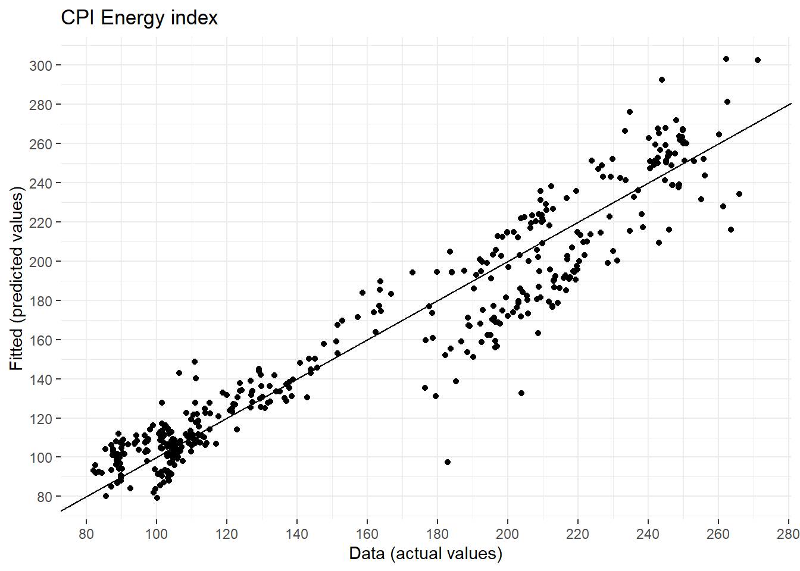
Looking at the residuals it is clear that this simple model is misspecified as there is autocorrelation in the residuals.
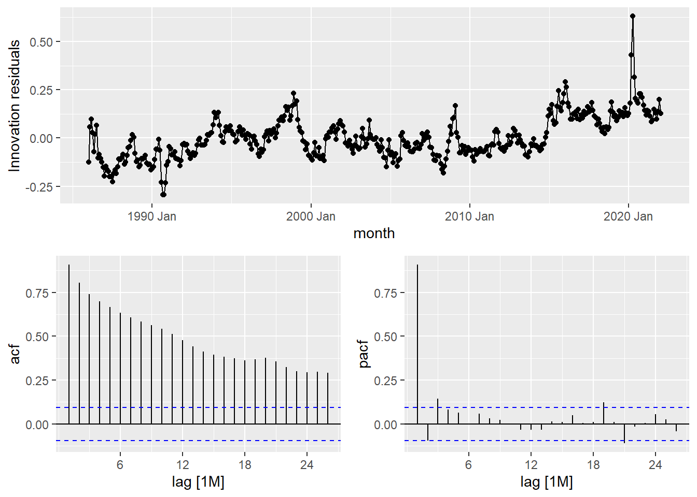
The residuals of the simple model reported in the previous section clearly shows the presence of a trend or drift. Moreover, even allowing for the presence of a trend the residuals present serial correlation.
Therefore it seems appropriated to model energy cpi considering a trend and assuming an ARMA process for the residuals.
A deterministic trend is represented by
\[ ecpi_t = \beta_0 + \beta_1 wti_t + \beta_2 t + \eta_t\]
where \(\eta_t\) is an ARMA process. A stochastic trend is represented by
\[ecpi_t = ecpi_{t-1} + \beta_1 wti_t + \beta_2 + \eta_t \]
Additionally, I’ve tested both models including up to four lags for the \(wti_t\) prices.
The table blow shows the different models considered, using data up to December 2019, and sorted by AICc.
# A tibble: 10 x 8
.model sigma2 log_lik AIC AICc BIC ar_roots ma_roots
<chr> <dbl> <dbl> <dbl> <dbl> <dbl> <list> <list>
1 deterministic_l1 0.000311 1068. -2118. -2118. -2082. <cpl [1]> <cpl [3]>
2 deterministic_l3 0.000304 1068. -2113. -2113. -2069. <cpl [1]> <cpl [3]>
3 stochastic_l1 0.000316 1063. -2111. -2111. -2083. <cpl [0]> <cpl [3]>
4 deterministic_l2 0.000312 1065. -2111. -2110. -2071. <cpl [1]> <cpl [3]>
5 deterministic_l4 0.000301 1067. -2111. -2110. -2062. <cpl [1]> <cpl [3]>
6 stochastic_l3 0.000309 1062. -2104. -2104. -2064. <cpl [3]> <cpl [1]>
7 stochastic_l2 0.000316 1060. -2103. -2103. -2071. <cpl [0]> <cpl [3]>
8 stochastic_l4 0.000306 1061. -2100. -2100. -2056. <cpl [3]> <cpl [1]>
9 deterministic 0.000454 994. -1968. -1968. -1928. <cpl [3]> <cpl [3]>
10 stochastic 0.000464 988. -1959. -1959. -1927. <cpl [3]> <cpl [2]>Looking at the AICc information criteria the best model includes a deterministic trend, one lag of \(wti\), and ARMA(1,3) errors. The BIC criteria suggest a stochastic trend model with one lag of \(wti\) and MA(3) errors.
Both models are printed below:
Series: cpi_energy
Model: LM w/ ARIMA(1,0,3) errors
Transformation: log(cpi_energy)
Coefficients:
ar1 ma1 ma2 ma3 trend() log(wti) lag(log(wti))
0.9527 0.2208 -0.2147 -0.2105 0.0015 0.1373 0.1512
s.e. 0.0220 0.0548 0.0562 0.0545 0.0001 0.0109 0.0107
intercept
3.6554
s.e. 0.0517
sigma^2 estimated as 0.0003114: log likelihood=1068.06
AIC=-2118.13 AICc=-2117.67 BIC=-2082.02Series: cpi_energy
Model: LM w/ ARIMA(0,1,3) errors
Transformation: log(cpi_energy)
Coefficients:
ma1 ma2 ma3 log(wti) lag(log(wti)) intercept
0.1873 -0.2531 -0.2351 0.1326 0.1469 0.0012
s.e. 0.0485 0.0491 0.0521 0.0104 0.0102 0.0006
sigma^2 estimated as 0.0003157: log likelihood=1062.62
AIC=-2111.25 AICc=-2110.97 BIC=-2083.19And the model’s fitted values are similar and close to the actual observed values.
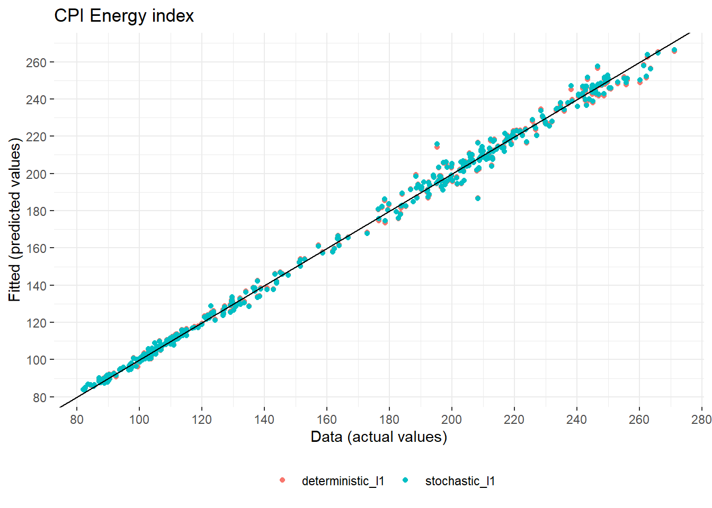
And looking at the residuals it seems that both models are appropriate.
Deterministic trend:
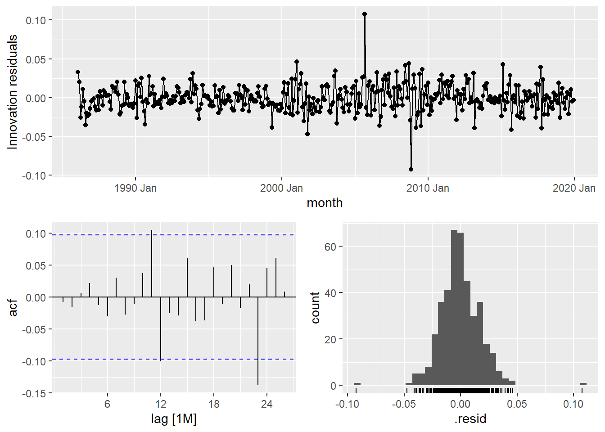
Stochastic trend:
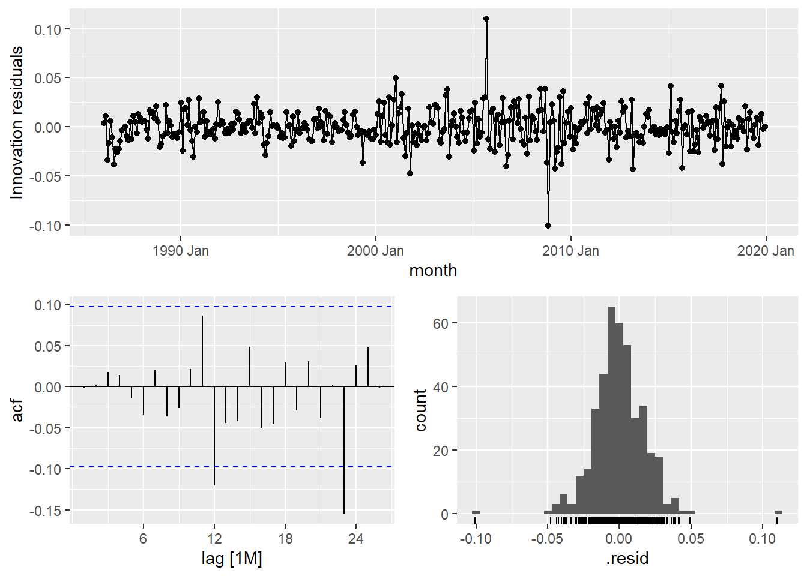
In order to use the model to forecast the energy component of CPI one needs to assume a path for oil prices. One possibility is to assume a random walk model. The chart below shows some possible simulated paths for the next 2 years based on bootstrap residuals.
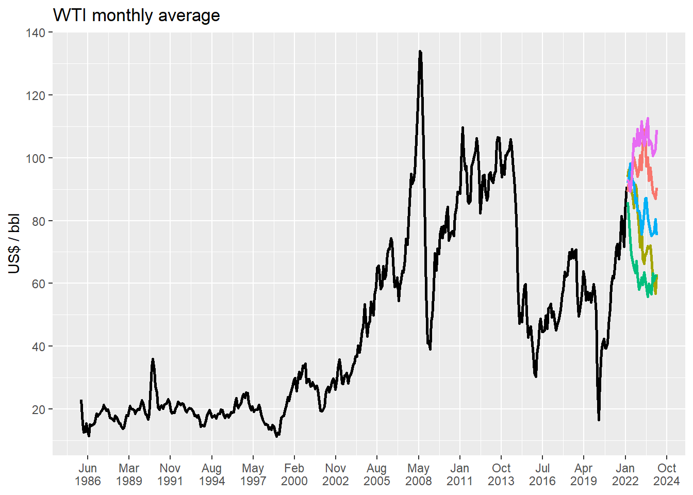
However, if we simulate enough paths and take the average we get the the expected random walk behavior.
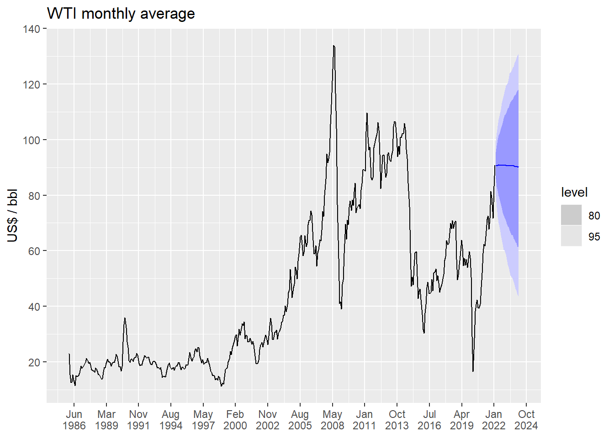
But we can also pick a quantile if we want to add a bias to the path of future oil prices. In the chart below, the path highlighted in red shows the 80th percentile, or in other words, the path where there are only 20% of the sample above it. The selected path can then be used to forecast energy CPI.
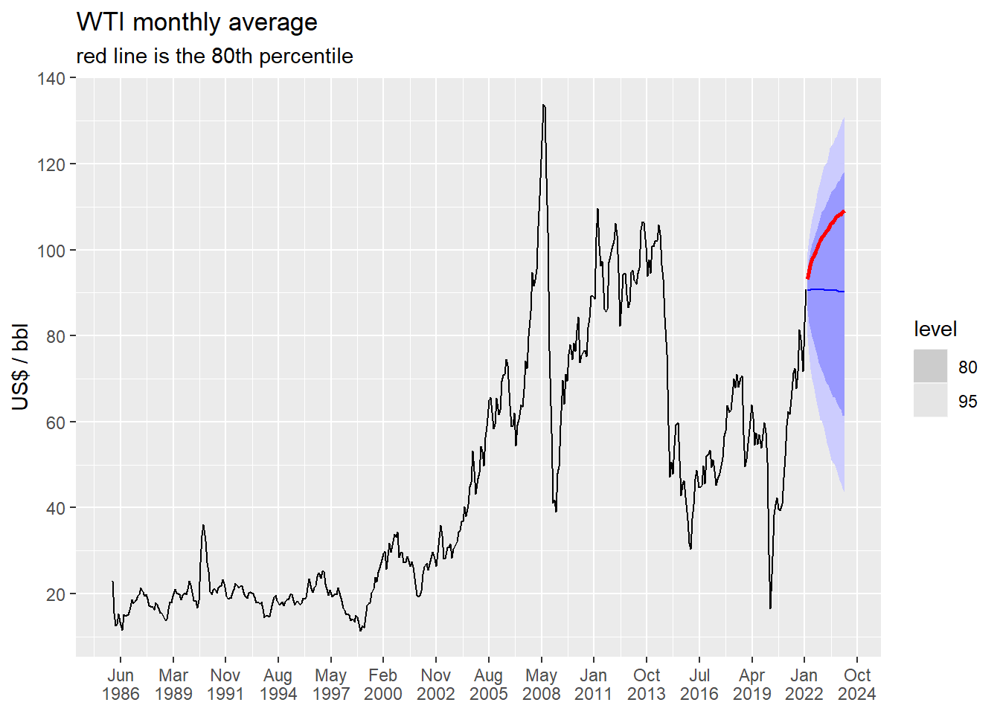
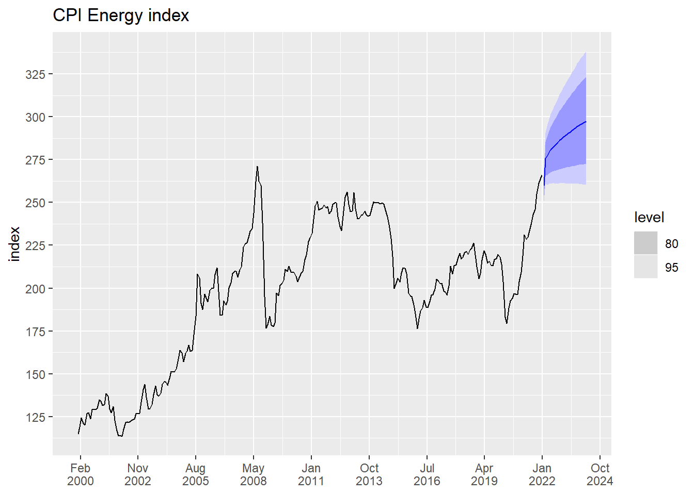
The expected path 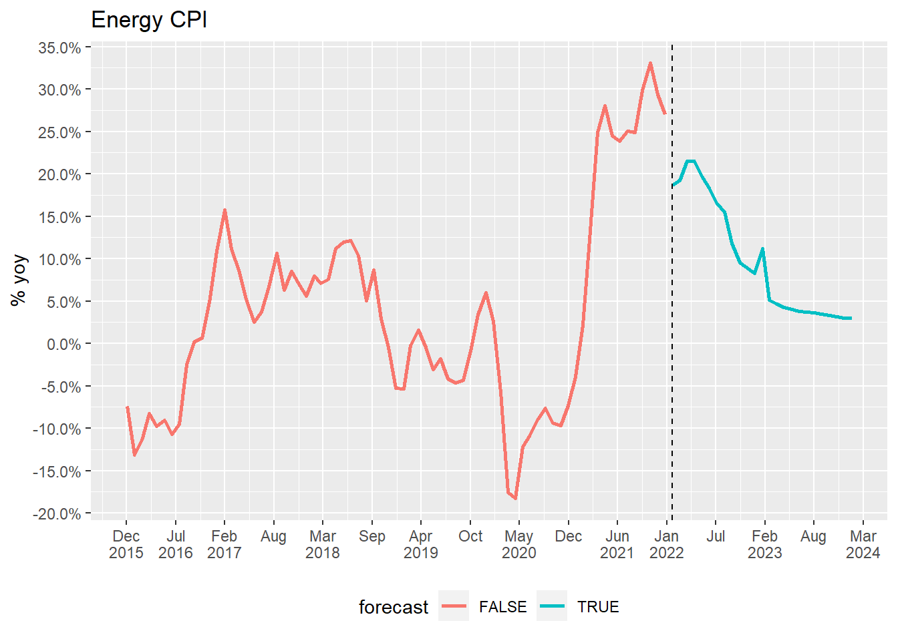
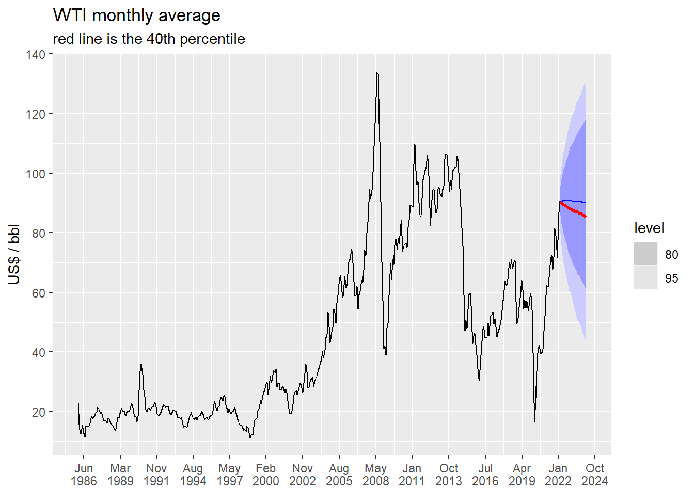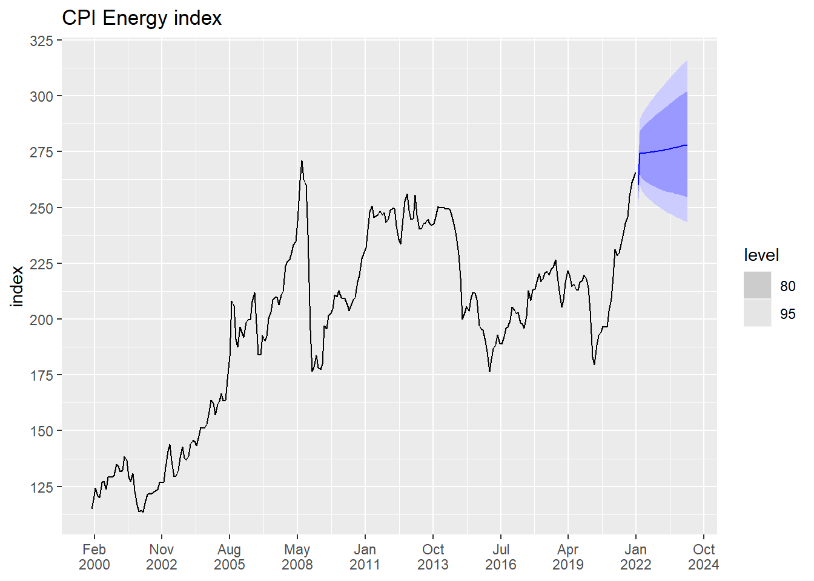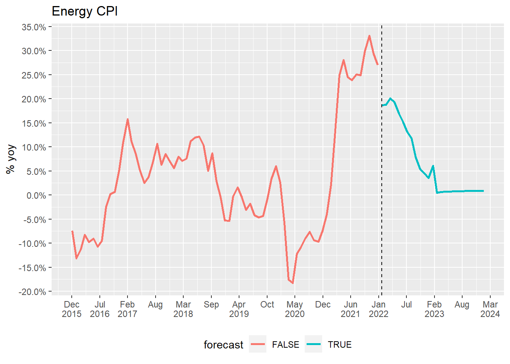
R version 4.1.2 (2021-11-01)
Platform: x86_64-w64-mingw32/x64 (64-bit)
Running under: Windows 10 x64 (build 19044)
Matrix products: default
locale:
[1] LC_COLLATE=English_United States.1252
[2] LC_CTYPE=English_United States.1252
[3] LC_MONETARY=English_United States.1252
[4] LC_NUMERIC=C
[5] LC_TIME=English_United States.1252
attached base packages:
[1] stats graphics grDevices utils datasets methods base
other attached packages:
[1] fable_0.3.1 feasts_0.2.2 fabletools_0.3.2 tsibbledata_0.4.0
[5] tsibble_1.1.1 ggplot2_3.3.5 lubridate_1.8.0 tidyr_1.2.0
[9] dplyr_1.0.8 tibble_3.1.6 fpp3_0.4.0 workflowr_1.7.0
loaded via a namespace (and not attached):
[1] Rcpp_1.0.8 getPass_0.2-2 ps_1.6.0
[4] assertthat_0.2.1 rprojroot_2.0.2 digest_0.6.29
[7] utf8_1.2.2 R6_2.5.1 evaluate_0.15
[10] highr_0.9 httr_1.4.2 pillar_1.7.0
[13] rlang_1.0.1 curl_4.3.2 rstudioapi_0.13
[16] whisker_0.4 callr_3.7.0 jquerylib_0.1.4
[19] pins_1.0.1 rmarkdown_2.11 fredr_2.1.0
[22] labeling_0.4.2 stringr_1.4.0 munsell_0.5.0
[25] anytime_0.3.9 numDeriv_2016.8-1.1 compiler_4.1.2
[28] httpuv_1.6.5 xfun_0.29 pkgconfig_2.0.3
[31] htmltools_0.5.2 tidyselect_1.1.1 progressr_0.10.0
[34] fansi_1.0.2 crayon_1.5.0 withr_2.4.3
[37] later_1.3.0 rappdirs_0.3.3 grid_4.1.2
[40] distributional_0.3.0 jsonlite_1.7.3 gtable_0.3.0
[43] lifecycle_1.0.1 DBI_1.1.2 git2r_0.29.0
[46] magrittr_2.0.2 scales_1.1.1 cli_3.2.0
[49] stringi_1.7.6 farver_2.1.0 fs_1.5.2
[52] promises_1.2.0.1 bslib_0.3.1 ellipsis_0.3.2
[55] generics_0.1.2 vctrs_0.3.8 tools_4.1.2
[58] glue_1.6.1 purrr_0.3.4 processx_3.5.2
[61] fastmap_1.1.0 yaml_2.3.4 colorspace_2.0-2
[64] knitr_1.37 sass_0.4.0